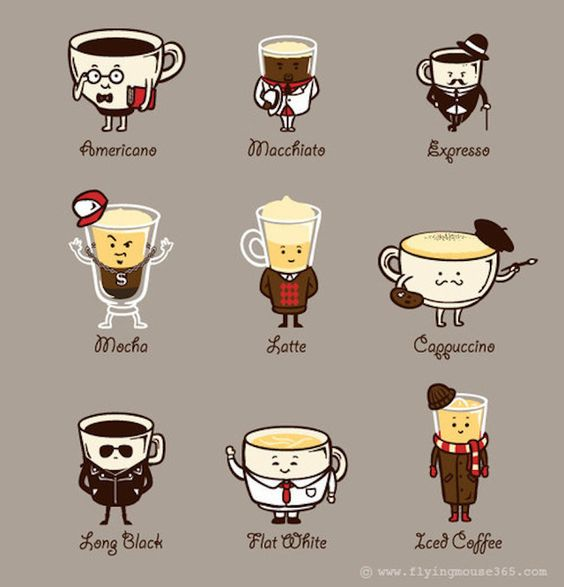
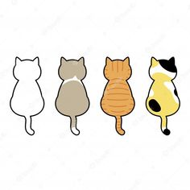

Thông tin sản phẩm
Cafe

Cà phê (bắt nguồn từ tiếng Pháp: café là một loại thức uống được ủ từ hạt cà phê rang,
lấy từ quả của cây cà phê.
lấy từ quả của cây cà phê.
Mèo

Mèo giao tiếp bằng cách kêu meo meo, gừ-gừ, rít, gầm gừ và ngôn ngữ cơ thể.
Mèo trong các bầy đàn sử dụng cả âm thanh lẫn ngôn ngữ cơ thể để giao tiếp với nhau.
Mèo trong các bầy đàn sử dụng cả âm thanh lẫn ngôn ngữ cơ thể để giao tiếp với nhau.
Trà

Cà phê (bắt nguồn từ tiếng Pháp: café là một loại thức uống được ủ từ hạt cà phê rang, lấy từ quả của cây cà phê.